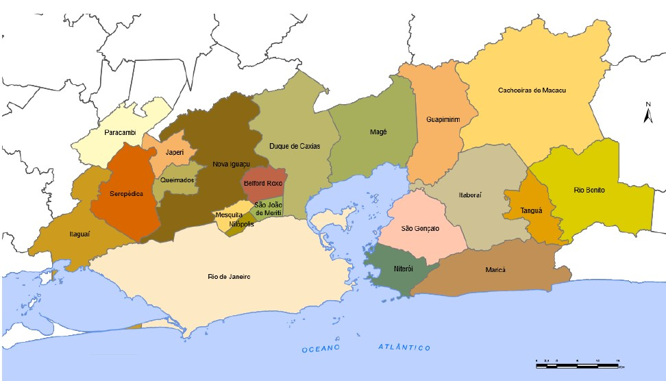
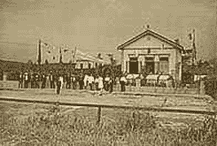

Por Cláudio de Oliveira
Diretor do Patrimônio Histórico de Nilópolis
Nilópolis foi parte integrante da capitania hereditária de São Vicente, que pertenceu a Martin Afonso de
Souza, em 1531.
Dividiu-a em sesmarias, doando grande parte a Braz Cubas fundador de Santos, em São Paulo, constando 3.000
braças por costa do lombo do Salgado e 9.000 braças para dentro em o Rio Meriti, correndo pela piaçaba de
Jacutinga, habitada pelos índios jacutingas, em 1568.

Nesta sesmaria incluía-se Nilópolis, São João de Meriti, Nova Iguaçu e Caxias, até às fraldas do Gericinó,
que
depois foram transformadas em novas sesmarias e grandes fazendas.
Em 1621 esta área denominada Fazenda de São Mateus, veio a pertencer a João Alvares Pereira, com os limites
até
a cachoeira dos engenhos de Francisco Dutra e André S. Mateus, entre a data da Cachoeira (rio Pioim) até parte
da serra da Maxambomba (atual Nova Iguaçu).
Em 1637 João Alvares Pereira manda construir a Capela de São Mateus, no alto da colina de Nilópolis, de barro
batido (adobo) pelos índios aqui existentes, já escravizados.
Sucedeu a João Alvares Pereira, Diogo Pereira, certamente seu parente, até o ano de 1700 quando as terras
passam
a pertencer a Domingos Machado Homem, cujo filho o Padre Matheus, na qual casa a irmã Maria Gaga Machado com o
capitão Manuel Pimenta Sampaio, em 1742.
Em 1747 a Capela de São Mateus é elevada a matriz de São João de Meriti, dando origem à cidade, e recebe a
visita do Monsenhor Pizzaro em 1788, atestando o uso como curada, portanto, pronta para todos os atos de fé
cristã.
Falecendo Domingos Machado Homem, casado com Joana de Barcelos, sucede-lhe o padre Matheus Homem Machado,que
continuou a administra-la com engenho e grande produção de açúcar e aguardente que escoava no Porto da Pavuna.
Quando do falecimento do Padre Matheus Homem Machado, do seu testamento constou que a fazenda tinha 1280
braças
de terra, que fazem testada no rio Pavuna, que as dividia das terras de Oliveira Braga (engenho Nazareth),
correndo aos fundos com o rio chamado Cachoeira Pequena (Maxambomba), que divide as terras do capitão Manuel
Correa Vasques; de uma banda partem as terras com o engenho da Pavuna, do capitão Ignácio Rodrigues da Silva e
da outra com terras do capitão Manuel Cabral de Mello e do ajudante Ignácio Barcelos Machado.
E, no ano de 1779, seu proprietário é o alferes Ambrósio de Souza Coutinho, e a fazenda atinge seu esplendor
com
a produção de 30 caixas de açúcar e 14 pipas de aguardente, tendo uma população de 50 escravos sendo a mais
importante da região.
O engenho situava-se na atual Antônio José Bitencourt (anteriormente Rua Coronel Júlio de Abreu) esquina da
Rua
Lúcio Tavares, e que através de um caminho, dava acesso à capela São Mateus, onde residiam e pernoitavam os
sucessivos proprietários da área da então fazenda de São Mateus.
Com a inauguração a 29 de março de 1858 da linha de trem da E.F.D Pedro II (atual E.F.C do Brasil), cortando
a
fazenda com destino a Queimados, a população nativa foi abandonando as terras, não só devido ao movimento
abolicionista como também por novas opções de mão-de-obra devido ao progresso e outras novas atividades.
E as terras da Fazenda São Mateus a partir de 1866, tinham como proprietários os capitalistas do Rio de
Janeiro
o Conde e o Barão de Bonfim, e por fim, Jerônimo José de Mesquita, que as negociou com o criador de cavalos e
mulas, João Alves Mirandela, que tinha como sócio Lázaro de Almeida, conforme escritura lavrada no dia 22 de
setembro de 1900, no valor de vinte e cinco contos de réis.
Da escritura consta que além das terras negociadas havia dois barracões e imóvel, que era a capela de São
Mateus, e sede da fazenda que limitava-se pelo lado de Maxambomba (atual Nova Iguaçu) com a fazenda da
Cachoeira, de propriedade do Barão de Mesquita e com as terras dos herdeiros de Antônio Rocha; pelo lado da
Pavuna, com as terras dos herdeiros do capitão Augusto da Costa Barreto e Sebastião Alves de Almeida; pelo
lado
direito, com o Distrito Federal, com as terras da fazenda de Nazareth (Anchieta) e terras da fazenda do Cabral
(do capitão Manuel Cabral).
João Alves Mirandela e seu irmão Manuel Alves Mirandela, grandes criadores de animais para o Exército,
cercaram
uma área, junto à cerca da fazenda do Gericinó, até que seu enteado Vitor Ribeiro de Faria Braga, convenceu-o
a
desmatar a fazenda para um possível loteamento.
Procedido ao desmatamento o mesmo enteado propôs a João Alves Mirandela que se fizesse uma planta da área,
que
foi aceito por um documento público, chamando o então engenheiro da Central do Brasil, Teodomiro Gonçalves
Ferreira, para executar a planta da cidade que iria surgir das matas da fazenda.
E, já no final de 1913 os jornais anunciavam lotes medindo 12,50m. por 50,00m., em suaves prestações.
Um destes anúncios chamou a atenção do Coronel Júlio de Abreu que veio pessoalmente conhecer a cidade que
estava
surgindo, e logo enamorou-se, comprando vários lotes e trazendo após, vários importantes amigos, objetivando
erguer uma cidade promissora.
Ele mesmo construiu a primeira casa de pedra e cal, dando o nome de Vila Ema, em homenagem à sua esposa,
inaugurando-a festivamente, com as presenças de comerciantes, banqueiros, políticos, homens públicos, ligados
ao
Rio de Janeiro, no dia 06 de setembro de 1914, marco de fundação da cidade de Nilópolis.
No mesmo local fundou o bloco do Progesso de São Matheus depois de Nilópolis, sob sua inspiração e
presidência,
tendo como presidente de honra Nilo Peçanha, que aqui esteve duas vezes, com o pensamento voltado para obter
os
melhoramentos de que uma cidade carece.
Foi através dele que a cidade teve imediatamente ligação d'água; ligação de luz e iluminação pública; agência
do
correio; escolas particulares e públicas; comunicação; horário de trens; pontes ligando ao Rio de Janeiro e
Nova
Iguaçu; serviço de profilaxia rural; bandas de música e uma grande revista "Nilópolis". Nilópolis, já se
chamou
parada de São Mateus; parada e estação de Engenheiro Neiva, em homenagem a Lucas Soares Neiva, construtor da
parada e plataforma dos trens; e Nilópolis, em homenagem a Nilo Peçanha, a partir de 01 de Janeiro de 1921,
grande benfeitor de Nilópolis, numa festividade inesquecível.
Nilópolis esteve por muito tempo vinculado e fazia parte integrante da vida de São João de Meriti, então
quarto
distrito de Nova Iguaçu, até que por solicitação do Deputado Manoel Reis, pela Lei nº 1332, foi elevado a
sétimo
distrito de Nova Iguaçu a partir de 1916, com apenas dois anos de existência como cidade.
E seu desenvolvimento foi num crescendo extraordinário, graças ao empenho de sua população laboriosa até que
estando em discussão a nova carta constitucional do Estado do Rio de Janeiro, o Deputado Lucas de Andrade
Figueira propôs uma emenda, promulgada a 20 de junho de 1947, emancipando Nilópolis juntamente com São joão de
Meriti, e que se comemora a 21 de agosto de cada ano.
Porém, cometeu-se nesta emancipação uma flagrante injustiça, pois sendo a área de 22 Km2, que era a mesma da
Fazenda de São Mateus, ficou reduzida a apenas 09 Km2, perdendo 5,60 Km2 para o Gericinó; 5,60Km2 para São
João
de Meriti e 1,80 Km2 para Nova Iguaçu.
Primeira casa da Cidade,construída por Coronel Júlio de Abreu, em homenagem à sua esposa, no dia 06 de
setembro
de 1914, marco de fundação da cidade de Nilópolis. 
Conheça mais sobe esta bela cidade visite este site: www.nilopolis.com.br